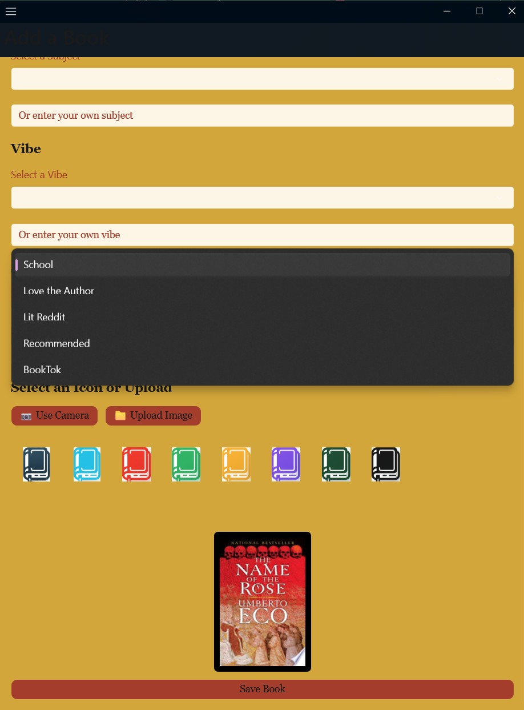
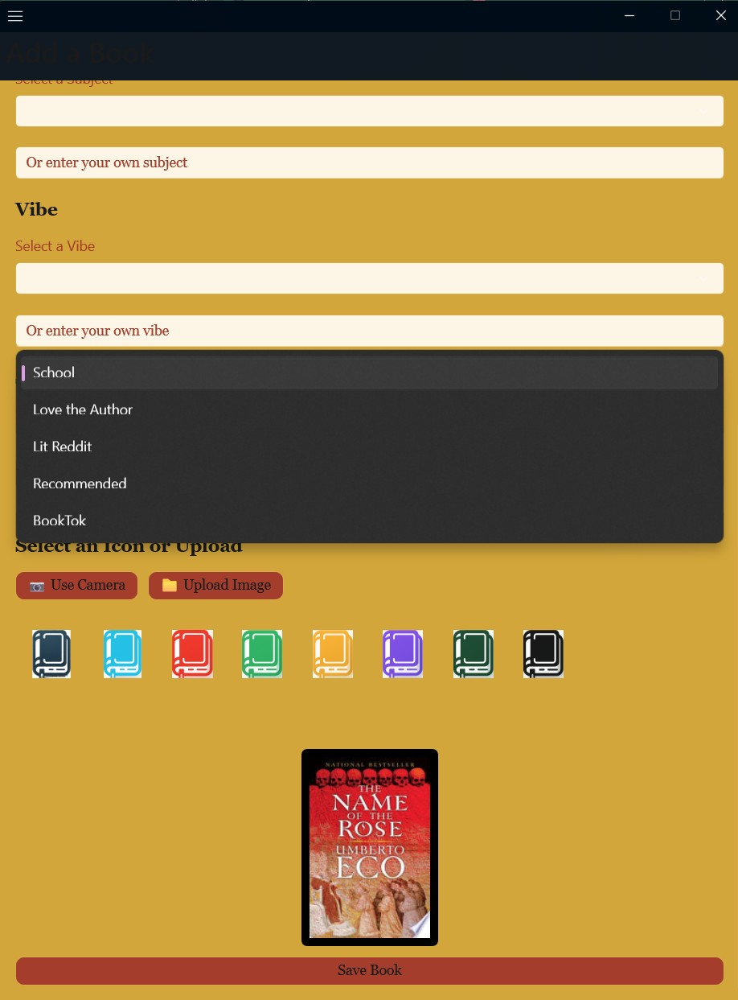
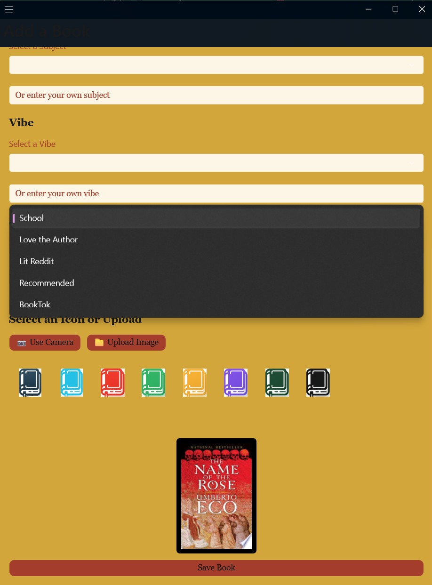

TBR (To Be Read) is a multiplatform application for tracking a users reading. Using CRUD functionality, the user can create lists of books they want to read, are currently reading, have read, etc. The long term goal is to implement a social web and recommendation engine using selective data to recognize that every user has a unique set of tastes.
